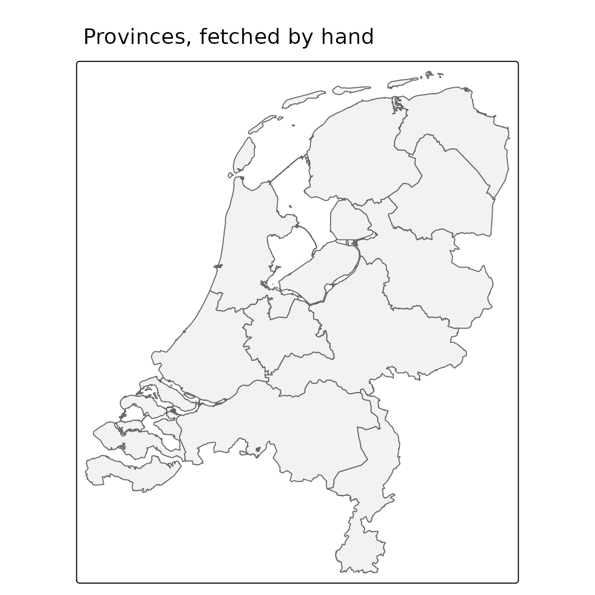

pdokr is a thin convenience layer over PDOK’s open web
services. This article shows how to talk to those services directly with
httr2 and sf, so you
understand what the package automates and can drop down to raw requests
when you need to.
The dataset index
Every OGC API dataset is listed at
https://api.pdok.nl/index.json.
index <- request("https://api.pdok.nl/index.json") |>
req_perform() |>
resp_body_json()
length(index$apis)
#> [1] 123
index$apis[[1]]$links[[1]]$href
#> [1] "https://api.pdok.nl/kadaster/3d-basisvoorziening/ogc/v1"pdok_list_datasets() fetches and tidies exactly
this.
The layers in a dataset
Each dataset exposes its layers at
{base}/collections?f=json.
collections <- request("https://api.pdok.nl/cbs/gebiedsindelingen/ogc/v1/collections") |>
req_url_query(f = "json") |>
req_perform() |>
resp_body_json()
vapply(collections$collections, function(x) x$id, character(1))[1:6]
#> [1] "arbeidsmarktregio_gegeneraliseerd"
#> [2] "arbeidsmarktregio_labelpoint"
#> [3] "arrondissementsgebied_gegeneraliseerd"
#> [4] "arrondissementsgebied_labelpoint"
#> [5] "buurt_gegeneraliseerd"
#> [6] "buurt_labelpoint"That is what pdok_list_layers() parses.
Reading features
Features come from {base}/collections/{layer}/items as
GeoJSON. Add query parameters for the format, a page size, and optional
filters. Here we ask for the 2024 provinces.
url <- paste0(
"https://api.pdok.nl/cbs/gebiedsindelingen/ogc/v1/",
"collections/provincie_gegeneraliseerd/items"
)
resp <- request(url) |>
req_url_query(
f = "json",
limit = 12,
datetime = "2024-07-01T00:00:00Z"
) |>
req_perform()
provinces <- read_sf(resp_body_string(resp))
provinces[, "statnaam"]
#> Simple feature collection with 12 features and 1 field
#> Geometry type: MULTIPOLYGON
#> Dimension: XY
#> Bounding box: xmin: 3.358378 ymin: 50.75037 xmax: 7.227498 ymax: 53.55405
#> Geodetic CRS: WGS 84
#> # A tibble: 12 × 2
#> statnaam geometry
#> <chr> <MULTIPOLYGON [°]>
#> 1 Groningen (((7.209673 53.23964, 7.208053 53.2392, 7.206544 53.23755, 7.2…
#> 2 Fryslân (((5.373002 53.07226, 5.376507 53.07129, 5.378172 53.0714, 5.3…
#> 3 Drenthe (((6.494388 53.1982, 6.496428 53.19814, 6.506845 53.20015, 6.5…
#> 4 Overijssel (((5.7963 52.59229, 5.797743 52.59077, 5.792369 52.59117, 5.78…
#> 5 Flevoland (((5.863512 52.52035, 5.85877 52.51906, 5.85873 52.51981, 5.85…
#> 6 Gelderland (((5.605991 52.36322, 5.603903 52.36174, 5.601446 52.3609, 5.6…
#> 7 Utrecht (((5.021543 52.30246, 5.021867 52.28265, 5.022826 52.28215, 5.…
#> 8 Noord-Holland (((5.326332 52.29079, 5.3271 52.29033, 5.31565 52.2927, 5.3154…
#> 9 Zuid-Holland (((4.55493 51.69685, 4.544329 51.69513, 4.548551 51.6966, 4.56…
#> 10 Zeeland (((3.519435 51.40749, 3.54567 51.40531, 3.547676 51.40517, 3.5…
#> 11 Noord-Brabant (((4.872207 51.41288, 4.873107 51.41242, 4.871936 51.41216, 4.…
#> 12 Limburg (((5.932767 51.74194, 5.935891 51.74103, 5.938299 51.74159, 5.…The CRS of the returned coordinates is announced in a response header (CRS84, i.e. lon/lat, by default):
resp_header(resp, "Content-Crs")
#> [1] "<http://www.opengis.net/def/crs/OGC/1.3/CRS84>"A bounding box pre-filter is just another query parameter,
bbox = "xmin,ymin,xmax,ymax" in CRS84.
Pagination
The API does not return all features at once. Each response carries a
next link when more pages are available; you follow it
until it disappears. (PDOK uses cursor-based pagination, so you cannot
jump to an offset.)
body <- resp_body_json(resp)
next_link <- Filter(function(l) l$rel == "next", body$links)
length(next_link) # 0 here: all 12 provinces fit on one page
#> [1] 0pdok_read() runs this loop for you and binds the pages
into one sf object.
WFS, the older service
PDOK also offers an older Web Feature Service (WFS) for some
datasets. pdokr is an OGC API Features client and does not
read WFS — almost all vector data (including BAG) is now available over
the OGC API. On the rare occasion you need a WFS-only layer, GDAL can
read it directly, optionally with a server-side spatial filter:
# Read a WFS layer by hand (the layer's CRS is RD New / EPSG:28992):
buildings <- read_sf(
"WFS:https://service.pdok.nl/some/dataset/wfs/v1_0",
layer = "namespace:layer",
wkt_filter = sf::st_as_text(area_in_rd_new)
)Putting it together
What we read by hand is an ordinary sf object, ready to
map:
library(tmap)
tmap_mode("plot")
#> ℹ tmap modes "plot" - "view"
#> ℹ toggle with `tmap::ttm()`
tm_shape(provinces) +
tm_polygons(fill = "grey95", col = "grey40") +
tm_title("Provinces, fetched by hand")
Everything above is what pdokr wraps: discovery,
pagination, CRS handling, and the GeoJSON-to-sf conversion,
behind a handful of pdok_*() functions.
Where to next
-
Getting started — the same tasks
with the
pdok_*()functions. - Coordinate reference systems — more on CRS84, RD New and axis order.